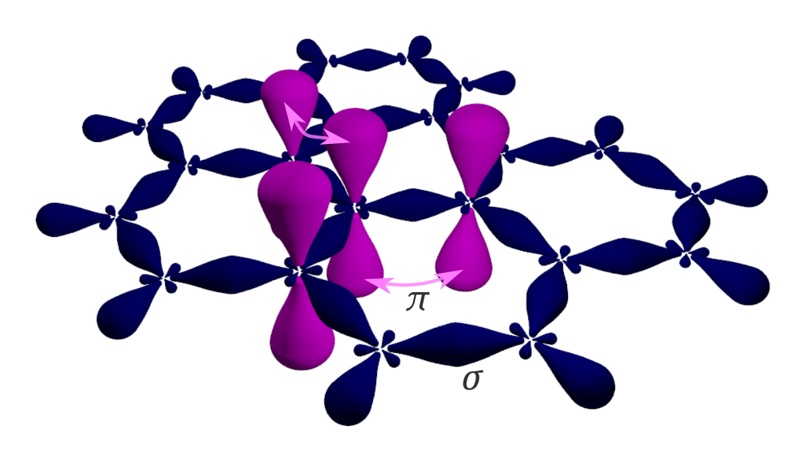
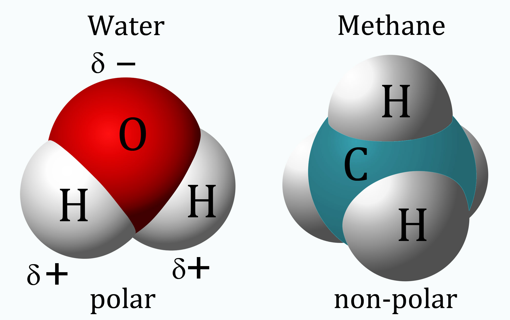
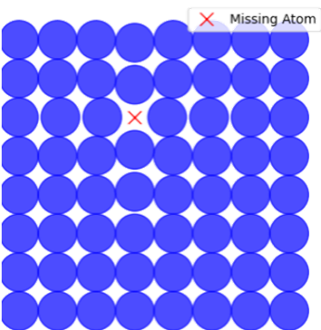
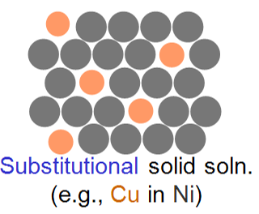
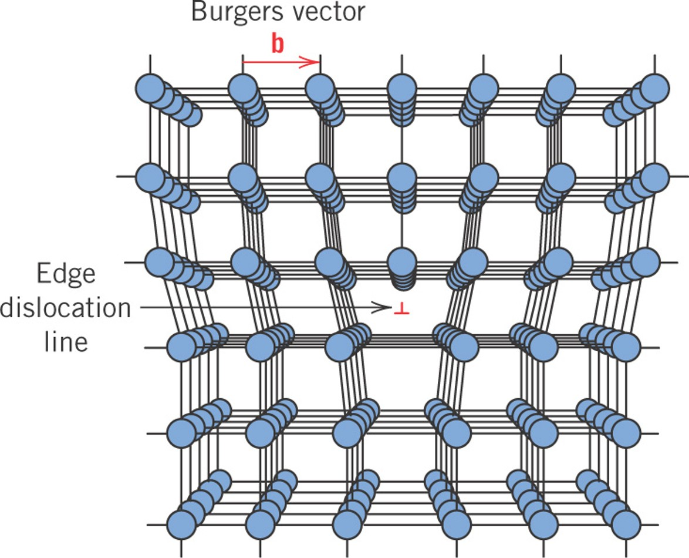
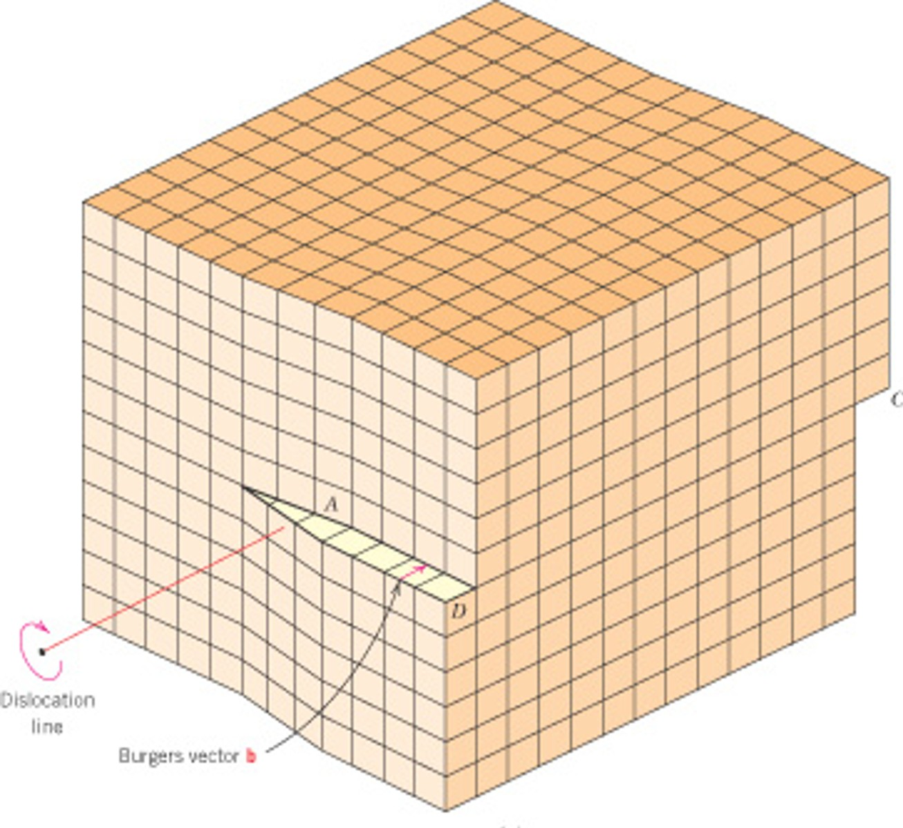

<!--Overall html File Structure-->
<!DOCTYPE html>
<html lang="en">

<head></head>

<body class="courseware-themes">
    <header class="custom-header">
        <h1></h1>
    </header>
    <main class="courseware-layouts-content-wrapper">
        <section></section>
        <section></section>
    </main>
    <footer></footer>
</body>

</html>

<!--File Head-->

<head>
    <meta charset="utf-8" />
    <meta name="viewport" content="width=device-width, initial-scale=1, maximum-scale=1 shrink-to-fit=no" />
    <link rel="icon" href="../assets/img/favicon.ico" type="image/x-icon" />
    <title>Bond Types in Materials</title>

    <script type="module" src="../assets/js/global.min.js"></script>
    <script defer="" src="https://templates.lcs.brightspace.com/lib/assets/js/scripts.min.js"></script>
    <script src="../assets/js/videoExpand.js"></script>
    <script src="../assets/js/load-mathjax.js" defer></script>
    <link rel="stylesheet" href="../assets/css/global.minv5.css" />
    <link rel="stylesheet" href="../assets/css/custom.css?v=1.1" />
    <link rel="stylesheet" href="../assets/css/customv5.css" />
</head>

<!-- iframe -->
<div
            style="position: relative; width: 100%; max-width:800px; aspect-ratio:1.5; overflow: hidden; margin:0 auto; margin-top:25px;">
            <iframe src="../assets/demos/bond_energy_plot_v1.0.html" title="interactive periodic table"
                style="width: 100%; height: 100%; border: 0;" scrolling="no" frameborder="0"
                allowfullscreen="allowfullscreen">
            </iframe>
        </div>

<!-- iframe dynamic height adjustment -->
        <!-- parent page -->
        <section>
            <div id="iframe-container" style="position: relative; width: 100%; max-width:800px; margin: 0 auto; margin-top: 25px;">
                <iframe id="dynamic-iframe" src="../assets/demos/diffusivity_temp.html" title="Diffusion Coefficient"
                    style="width: 100%; border: 0;" scrolling="no" frameborder="0" allowfullscreen="allowfullscreen">
                </iframe>
            </div>
        </section>
            <!-- place script in head -->
        <script>
            function resizeIframe(event) {
                if (event.origin !== window.location.origin) return; // Ensure security
                
                const iframe = document.getElementById('dynamic-iframe');
                if (event.data && event.data.height) {
                    iframe.style.height = event.data.height + 'px';
                }
            }

            window.addEventListener('message', resizeIframe, false);
        </script>

        <!-- embedded page -->
        <script>
            function sendHeight() {
                const height = document.documentElement.scrollHeight;
                window.parent.postMessage({ height }, "*");
            }

            window.addEventListener("load", sendHeight);
            window.addEventListener("resize", sendHeight);
        </script>


<!--Section, Heading, text and unordered list-->
<section>
    <h2>Interfacial Defects</h2>
    <p>We will focus primarily on grain boundaries but for completeness here are a list of various interfacial defects.
    </p>
    <ul>
        <li><strong>Grain Boundaries:</strong> Interfaces between crystals with different orientations. Can be
            characterized by the degree of misorientation (rotation) between the grains and are often referred to as
            high-angle or low-angle grain boundaries.</li>
        <li><strong>Phase Boundaries:</strong> Separate different phases within a material. We will hold off on
            discussing these until module 9 on phase diagrams.</li>
        <li><strong>Stacking Faults:</strong> Errors in the stacking sequence of atomic planes. Imagine the ABCABC...
            packing of fcc (111) planes. A stacking fault would be a sequence where we skip one of the "C" positions.
            For example, ABCA<strong>BA</strong>BCABC..., here the stacking fault is between the "BA" planes shown in
            bold. </li>
        <li><strong>Surface:</strong> The surface is an interfacial defect as the atoms on the surface are missing
            neighbors.</li>
    </ul>
</section>


<!--Video side by side small and expand on play-->
<div class="courseware-layouts-content-wrapper">
    <div class="courseware-video-wrapper" id="video1">
        <div class="courseware-video-text">
            <p>Title</p>
        </div>
        <div class="courseware-video-embed-responsive"><video title="Video Lesson" onclick="expandVideo('video1')">
                <source src="../assets/media/02.01_bonding_part_a.mp4" type="video/mp4">
                <track src="../assets/media/02.01_bonding.vtt" kind="subtitles" srclang="en" label="English"
                    type="text/vtt">
            </video></div>
    </div>
    <div class="courseware-video-wrapper" id="video2">
        <div class="courseware-video-text">
            <p>Title</p>
        </div>
        <div class="courseware-video-embed-responsive"><video title="Video Lesson" onclick="expandVideo('video2')">
                <source src="../assets/media/02.01_bonding_part_b.mp4" type="video/mp4">
                <track src="../assets/media/02.01_Video Project 2.vtt" kind="subtitles" srclang="en" label="English"
                    type="text/vtt">
            </video></div>
    </div>
</div>

<!--Multiple Videos with closed captioning, headers and handout link at bottom-->
<div class="courseware-layouts-content-wrapper">
    <div class="courseware-video-wrapper" id="video1">
        <div class="courseware-video-text">
            <p>Intro & Point Defects</p>
        </div>
        <div class="courseware-video-embed-responsive"><video title="Video Lesson" onclick="expandVideo('video1')">
                <source src="../assets/media/04.01_defects.mp4" type="video/mp4">
                <track src="../assets/media/04.01_defects.vtt" kind="subtitles" srclang="en" label="English"
                    type="text/vtt">
            </video></div>
        <div class="courseware-video-text" style="text-align:center;">
            <a href="../assets/handouts/04.01_defects.pptx" download>
                (PowerPoint slides)
            </a>
        </div>
    </div>
    <div class="courseware-video-wrapper" id="video2">
        <div class="courseware-video-text">
            <p>Linear Defects: Dislocations</p>
        </div>
        <div class="courseware-video-embed-responsive"><video title="Video Lesson" onclick="expandVideo('video2')">
                <source src="../assets/media/04.02_defects.mp4" type="video/mp4">
                <track src="../assets/media/04.02_defects.vtt" kind="subtitles" srclang="en" label="English"
                    type="text/vtt">
            </video></div>
        <div class="courseware-video-text" style="text-align:center;">
            <a href="../assets/handouts/04.02_defects.pptx" download>
                (PowerPoint slides)
            </a>
        </div>
    </div>
    <div class="courseware-video-wrapper" id="video3">
        <div class="courseware-video-text">
            <p>Interfacial Defects</p>
        </div>
        <div class="courseware-video-embed-responsive"><video title="Video Lesson" onclick="expandVideo('video3')">
                <source src="../assets/media/04.03_defects.mp4" type="video/mp4">
                <track src="../assets/media/04.03_defects.vtt" kind="subtitles" srclang="en" label="English"
                    type="text/vtt">
            </video></div>
        <div class="courseware-video-text" style="text-align:center;">
            <a href="../assets/handouts/04.03_defects.pptx" download>
                (PowerPoint slides)
            </a>
        </div>
    </div>
</div>

<!--Aside course style-->
<div class="courseware-card aside-card">
    <div class="courseware-card-header" style="margin-bottom:0; padding-bottom:0;">
        <h4>Header text</h4>
    </div>
    <div class="courseware-card-body">
        
        <p>
            Bond hybridization is the process by which atomic orbitals combine to form new hybrid
            orbitals
            that are better suited for bonding. An <strong>orbital</strong> is a region around an atom
            where
            there is a high probability of finding electrons. These hybrid orbitals determine the
            geometry
            and strength of chemical bonds.
        </p>
        <p>
            For example, carbon atoms in diamond undergo <strong>sp<sup>3</sup>-hybridization</strong>,
            where one s-orbital and three p-orbitals mix to form four equivalent tetrahedral bonds. This
            configuration gives diamond its characteristic hardness.
        </p>
        <p>
            In contrast, in graphene or graphite, carbon atoms undergo
            <strong>sp<sup>2</sup>-hybridization</strong>, mixing one s-orbital and two p-orbitals,
            leaving
            one p-orbital unhybridized. This results in a planar structure with delocalized electrons,
            which
            contribute to graphene's exceptional electrical conductivity.
        </p>
    </div>
</div>

<!--figure no caption-->
<div class="courseware-layouts-content-wrapper">
    <figure style="max-width:250px;">
        
    </figure>
</div>

<!--flip cards-->
<div class="card-container" style="margin-top:-1rem;">
    <!-- Card 1 -->
    <div class="card-container-3">
        <div class="card-flip" onclick="this.classList.toggle('flipped')">
            <div class="card-front">
                <span class="flip-icon">↺</span>
                <p>What determines the type of bond formed between atoms?</p>
            </div>
            <div class="card-back" style="padding:15px;">
                <p>The electron configuration and electronegativity difference between the atoms.</p>
            </div>
        </div>
    </div>

    <!-- Card 2 -->
    <div class="card-container-3">
        <div class="card-flip" onclick="this.classList.toggle('flipped')">
            <div class="card-front">
                <span class="flip-icon">↺</span>
                <p>True or False: Secondary bonds are stronger than primary bonds.</p>
            </div>
            <div class="card-back">
                False. Primary bonds are significantly stronger than secondary bonds.
            </div>
        </div>
    </div>

    <!-- Card 3 -->
    <div class="card-container-3">
        <div class="card-flip" onclick="this.classList.toggle('flipped')">
            <div class="card-front">
                <span class="flip-icon">↺</span>
                Give an example of a primary bond and a secondary bond.
            </div>
            <div class="card-back">
                Primary: Ionic bond in NaCl. Secondary: Hydrogen bond between water molecules.
            </div>
        </div>
    </div>
</div>


<!--Multiple Images with captions, 3 across, expand on hover-->
<div style="display:flex;flex-wrap:wrap;gap:5px;justify-content:center;">
    <figure style="width: 30%;">
        
        <figcaption>
            <p>Vacancy: A missing atom in the lattice structure.</p>
        </figcaption>
    </figure>

    <figure style="width: 30%;">
        
        <figcaption>
            <p>Interstitial Impurity: An extra atom positioned between lattice atoms.</p>
        </figcaption>
    </figure>
    <figure style="width: 30%;">
        
        <figcaption>
            <p>Substitutional Impurity: A different atom replacing a lattice atom.</p>
        </figcaption>
    </figure>
</div>

<!-- Image, Video, Image 3 across, expandable video and images-->
<div style="display:flex;flex-wrap:wrap;gap:5px;justify-content:center;">
    <figure style="width: 30%;">
        
        <figcaption>
            <p>Edge Dislocation.</p>
        </figcaption>
    </figure>

    <div class="courseware-video-wrapper" id="video6">
        <div class="courseware-video-text">
            <p>Edge Dislocation Motion</p>
        </div>
        <div class="courseware-video-embed-responsive"><video title="Video Lesson" onclick="expandVideo('video6')">
                <source src="../assets/media/Supplemental/edge_dislocation_movement.mp4" type="video/mp4">

            </video></div>
    </div>

    <figure style="width: 30%;">
        
        <figcaption>
            <p>Screw Dislocation.</p>
        </figcaption>
    </figure>
</div>

<!-- Footer -->
<footer>
    <p>Copyright &copy; 2024 Sean Corcoran, Virginia Tech</p>
</footer>

<!---->

<!---->

<!---->

<!---->

<!---->

<!---->

<!---->

<!---->

<!---->

<!---->

<!---->

<!---->

<!---->

<!---->

<!---->

<!---->

<!---->

<!---->

<!---->

<!---->

<!---->

<!---->

<!---->